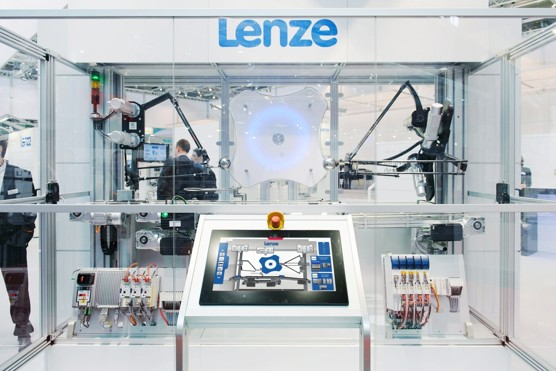
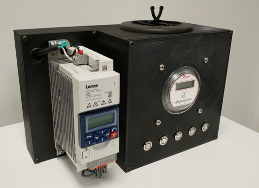
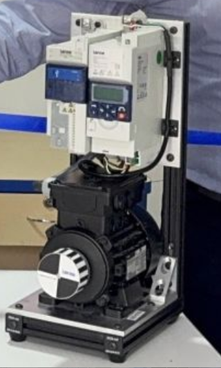

Over the course of this role, I designed, maintained, and presented multiple interactive Demo Displays for training customers and salesmen about Industrial Automation at Lenze.
Smart Motor Demo
Motor display built into a travel case. The Smart Motor is parameterizable via an RFD phone app. Introduced ability to program and select motion profiles to digital inputs.

EZ Machine
Trade show display of multi-axis automation display, including 3-axis delta robots and conveyor systems. Assembled, repaired and presented display at multiple trade shows, linking IoT production dashboards around the booth.

VFD Pump Demo
Showcases how to parameterize a Variable Frequency Drive (VFD) to control a pump. Including configuring PID control, and analog IO.

Multi-Purpose Motor Display
Developed a low-cost, low footprint motor and VFD display to showcase multiple products. Led training classes and developed curriculum for how to program the motor for different applications. Including cutting, winding, following, and conveyor.
